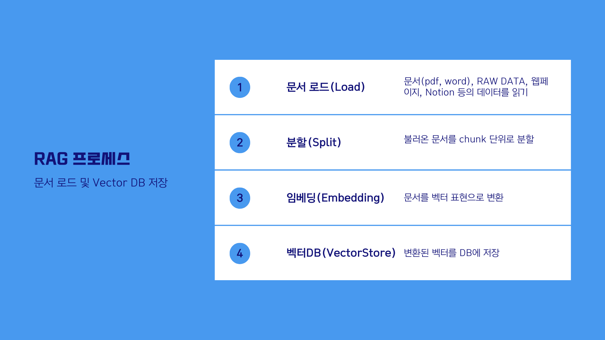
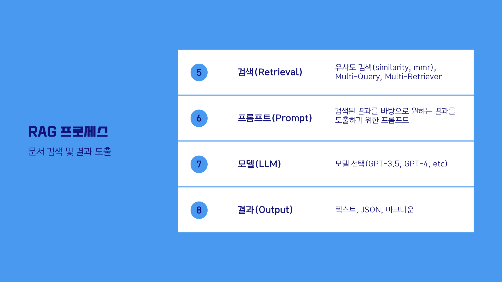

1 1. 사전작업(Pre-processing) - 1~4 단계


사전 작업 단계에서는 데이터 소스를 Vector DB (저장소) 에 문서를 로드-분할-임베딩-저장 하는 4단계를 진행합니다.
- 1단계 문서로드(Document Load): 문서 내용을 불러옵니다.
- 2단계 분할(Text Split): 문서를 특정 기준(Chunk) 으로 분할합니다.
- 3단계 임베딩(Embedding): 분할된(Chunk) 를 임베딩하여 저장합니다.
- 4단계 벡터DB 저장: 임베딩된 Chunk 를 DB에 저장합니다.
2 2. RAG 수행(RunTime) - 5~8 단계


- 5단계 검색기(Retriever): 쿼리(Query) 를 바탕으로 DB에서 검색하여 결과를 가져오기 위하여 리트리버를 정의합니다. 리트리버는 검색 알고리즘이며(Dense, Sparse) 리트리버로 나뉘게 됩니다. Dense: 유사도 기반 검색, Sparse: 키워드 기반 검색
- 6단계 프롬프트: RAG 를 수행하기 위한 프롬프트를 생성합니다. 프롬프트의 context 에는 문서에서 검색된 내용이 입력됩니다. 프롬프트 엔지니어링을 통하여 답변의 형식을 지정할 수 있습니다.
- 7단계 LLM: 모델을 정의합니다.(GPT-3.5, GPT-4, Claude, etc..)
- 8단계 Chain: 프롬프트 - LLM - 출력 에 이르는 체인을 생성합니다.
3 실습에 활용한 문서
소프트웨어정책연구소(SPRi) - 2023년 12월호
- 저자: 유재흥(AI정책연구실 책임연구원), 이지수(AI정책연구실 위촉연구원)
- 링크: https://spri.kr/posts/view/23669
- 파일명:
SPRI_AI_Brief_2023년12월호_F.pdf
실습을 위해 다운로드 받은 파일을 data 폴더로 복사해 주시기 바랍니다
4 환경설정
API KEY 를 설정합니다.
LangChain으로 구축한 애플리케이션은 여러 단계에 걸쳐 LLM 호출을 여러 번 사용하게 됩니다. 이러한 애플리케이션이 점점 더 복잡해짐에 따라, 체인이나 에이전트 내부에서 정확히 무슨 일이 일어나고 있는지 조사할 수 있는 능력이 매우 중요해집니다. 이를 위한 최선의 방법은 LangSmith를 사용하는 것입니다.
LangSmith가 필수는 아니지만, 유용합니다. LangSmith를 사용하고 싶다면, 위의 링크에서 가입한 후, 로깅 추적을 시작하기 위해 환경 변수를 설정해야 합니다.
5 RAG 기본 파이프라인(1~8단계)
코드
from langchain_text_splitters import RecursiveCharacterTextSplitter
from langchain_community.document_loaders import PyMuPDFLoader
from langchain_community.vectorstores import FAISS
from langchain_core.output_parsers import StrOutputParser
from langchain_core.runnables import RunnablePassthrough
from langchain_core.prompts import PromptTemplate
from langchain_openai import ChatOpenAI, OpenAIEmbeddings아래는 기본적인 RAG 구조 이해를 위한 뼈대코드(skeleton code) 입니다.
각 단계별 모듈의 내용을 앞으로 상황에 맞게 변경하면서 문서에 적합한 구조를 찾아갈 수 있습니다.
(각 단계별로 다양한 옵션을 설정하거나 새로운 기법을 적용할 수 있습니다.)
페이지의 내용을 출력합니다.
metadata 를 확인합니다.
검색기에 쿼리를 날려 검색된 chunk 결과를 확인합니다.
코드
# 단계 6: 프롬프트 생성(Create Prompt)
# 프롬프트를 생성합니다.
prompt = PromptTemplate.from_template(
"""You are an assistant for question-answering tasks.
Use the following pieces of retrieved context to answer the question.
If you don't know the answer, just say that you don't know.
Answer in Korean.
#Context:
{context}
#Question:
{question}
#Answer:"""
)생성된 체인에 쿼리(질문)을 입력하고 실행합니다.
6 전체 코드
코드
from langchain_text_splitters import RecursiveCharacterTextSplitter
from langchain_community.document_loaders import PyMuPDFLoader
from langchain_community.vectorstores import FAISS
from langchain_core.output_parsers import StrOutputParser
from langchain_core.runnables import RunnablePassthrough
from langchain_core.prompts import PromptTemplate
from langchain_openai import ChatOpenAI, OpenAIEmbeddings
# 단계 1: 문서 로드(Load Documents)
loader = PyMuPDFLoader("data/SPRI_AI_Brief_2023년12월호_F.pdf")
docs = loader.load()
# 단계 2: 문서 분할(Split Documents)
text_splitter = RecursiveCharacterTextSplitter(chunk_size=1000, chunk_overlap=50)
split_documents = text_splitter.split_documents(docs)
# 단계 3: 임베딩(Embedding) 생성
embeddings = OpenAIEmbeddings()
# 단계 4: DB 생성(Create DB) 및 저장
# 벡터스토어를 생성합니다.
vectorstore = FAISS.from_documents(documents=split_documents, embedding=embeddings)
# 단계 5: 검색기(Retriever) 생성
# 문서에 포함되어 있는 정보를 검색하고 생성합니다.
retriever = vectorstore.as_retriever()
# 단계 6: 프롬프트 생성(Create Prompt)
# 프롬프트를 생성합니다.
prompt = PromptTemplate.from_template(
"""You are an assistant for question-answering tasks.
Use the following pieces of retrieved context to answer the question.
If you don't know the answer, just say that you don't know.
Answer in Korean.
#Context:
{context}
#Question:
{question}
#Answer:"""
)
# 단계 7: 언어모델(LLM) 생성
# 모델(LLM) 을 생성합니다.
llm = ChatOpenAI(model_name="gpt-4.1-mini", temperature=0)
# 단계 8: 체인(Chain) 생성
chain = (
{"context": retriever, "question": RunnablePassthrough()}
| prompt
| llm
| StrOutputParser()
)